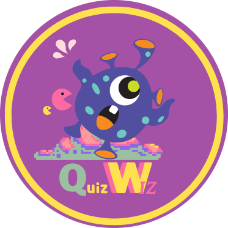

Selamat datang di QuizWiz, solusi inovatif untuk pengisian formulir quiz secara online yang lebih interaktif. Kami berkomitmen untuk menciptakan pengalaman yang menyenangkan dan inklusif bagi semua orang dalam proses pembelajaran dan evaluasi.
Di QuizWiz, kami percaya bahwa belajar tidak harus membosankan. Oleh karena itu, kami telah mengembangkan platform yang menawarkan pendekatan baru dalam mengisi formulir quiz dengan elemen-elemen interaktif yang menarik. Melalui desain yang intuitif dan fitur-fitur inovatif, kami mengubah pengalaman tradisional pengisian formulir menjadi sesuatu yang menyenangkan dan mengasyikkan.
Salah satu nilai inti kami adalah kesetaraan dalam pendidikan. Kami percaya bahwa semua orang, tanpa memandang latar belakang atau situasi keuangan, berhak mendapatkan akses yang sama terhadap pembelajaran. Dengan itu dalam pikiran, kami telah menyediakan fitur yang terbuka bagi semua orang, tanpa biaya tambahan atau batasan tertentu. Kami ingin memastikan bahwa setiap individu memiliki kesempatan yang sama untuk mengikuti quiz dan memperoleh pengetahuan yang berharga.
Fitur-fitur unggulan kami meliputi:
Interaktif dan Mengasyikkan: Platform kami menyediakan elemen-elemen interaktif, seperti pertanyaan berbasis gambar, pertanyaan dengan pilihan ganda yang menarik, dan animasi yang menarik perhatian. Ini membantu meningkatkan keterlibatan pengguna dalam proses pembelajaran.
Aksesibilitas Universal: Kami menyediakan platform yang dapat diakses melalui berbagai perangkat, termasuk komputer, ponsel pintar, dan tablet. Dengan demikian, setiap orang dapat mengikuti quiz kapan saja dan di mana saja sesuai kenyamanan mereka.
Personalisasi: Platform kami memungkinkan pengguna untuk mengkustomisasi pengalaman mereka. Mereka dapat memilih topik quiz yang menarik bagi mereka, mengatur tingkat kesulitan, dan mengakses konten yang relevan dengan minat dan kebutuhan mereka.
Laporan Hasil dan Analisis: Setelah mengisi formulir quiz, pengguna dapat dengan mudah melihat laporan hasil dan analisis yang memberikan wawasan tentang prestasi mereka. Hal ini membantu pengguna untuk memahami kekuatan dan kelemahan mereka serta memberikan saran untuk pengembangan lebih lanjut.
Kami berkomitmen untuk terus mengembangkan platform kami dan meningkatkan pengalaman pengguna. Dalam perjalanan ini, kami sangat menghargai umpan balik dari pengguna kami, karena hal itu membantu kami memahami kebutuhan mereka dengan lebih baik dan menghadirkan solusi yang lebih baik pula.
Bergabunglah dengan QuizWiz hari ini dan temukan pengalaman yang menyenangkan dalam pengisian formulir quiz online. Bersama-sama, mari kita membangun kesetaraan dalam pendidikan dan menginspirasi setiap orang untuk terus belajar.